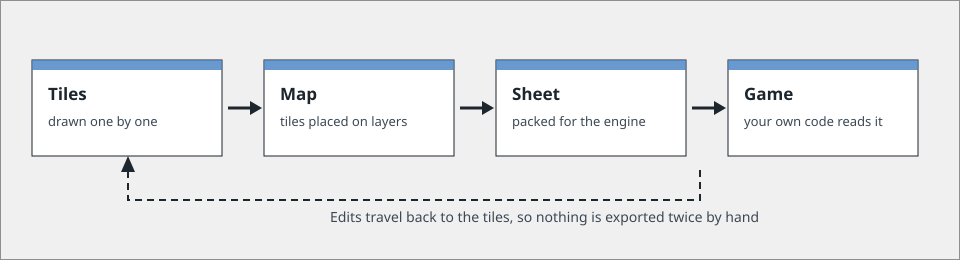
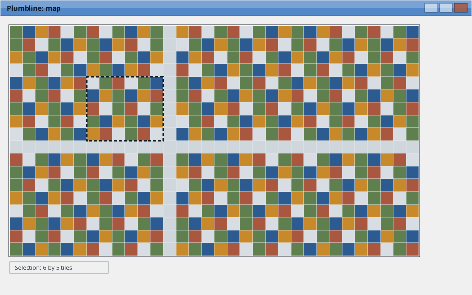
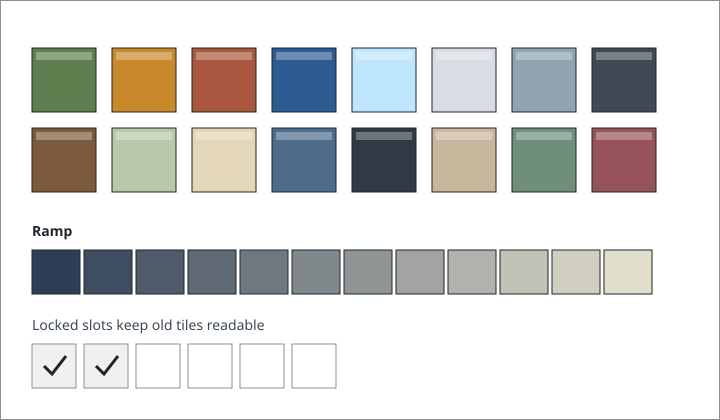
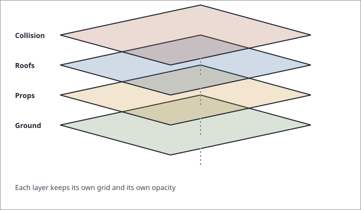
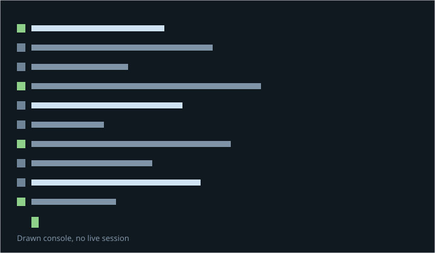
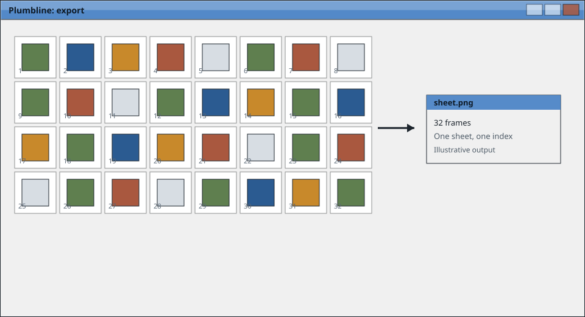

How it works
Tiles, a map, one sheet.
Plumbline holds one idea at each step and hands the result to the next one. Nothing is hidden in a project file you cannot open.
This tour describes an invented program. The steps and panels below are written to show how a real tool might explain itself, not to document software you can install.

The inspector
The right hand panel changes with what you have selected. Each tab below is one page of it. Move between them with the arrow keys, or click.
The canvas
The canvas is the map itself, at the size the game will read it. Grid lines sit under the tiles rather than over them, so a drawing never has to be squinted at through its own guides.
- Grid
- Set once per map, in tiles rather than pixels
- Selection
- Rectangular, and it keeps its shape while you drag it
- Undo
- Per map, and it survives a save

The palette
A palette is a small, fixed set of colours that every tile in a project shares. Slots can be locked, so a colour that older tiles depend on cannot quietly change under them.
- Slots
- Sixteen by default, and a project may hold several palettes
- Ramps
- Built from two ends, then adjusted by hand
- Locking
- A locked slot keeps its value when the palette is edited

Layers
Layers stack in the order a game draws them, and each one keeps its own grid. A collision layer is a layer like any other, so it can be edited with the same tools as the ground.
- Order
- Bottom to top, matching the order the engine reads
- Opacity
- Per layer, for editing only, and never written to the sheet
- Locking
- A locked layer is visible but cannot be painted on

Scripting
Anything the panels can do, a short script can do without opening the window. Scripts are plain text files kept beside the map, and they run in the order you give them.
- Language
- A short list of commands rather than a general language
- Scope
- One project at a time, named on the command line
- Output
- Written next to the map, never anywhere else on the disk

The console
The same commands the panels run are available as text. This is the one place in the template set in a monospaced face, because here the typing is the subject rather than the furniture.
$ plumb build map-01.pbl --sheet sheet.png
reading 96 tiles from tiles.pbl
packing 32 frames
wrote sheet.png and sheet.index
$ plumb watch map-01.pbl
watching for changes
A drawn session, written into the page as text. No command runs, nothing is sent anywhere, and the caret holds still when a visitor has asked for reduced motion.
Export
An export writes two files next to each other: one image holding every frame, and one index naming them. Engines that want a different layout can read the index and repack it.
